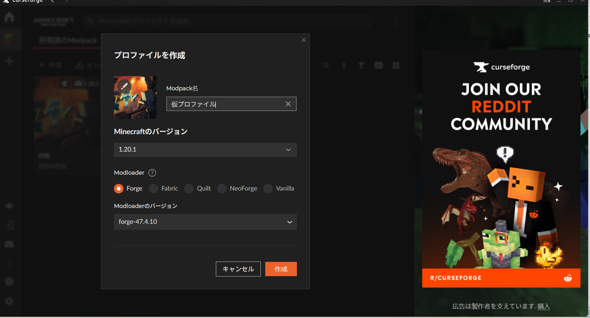
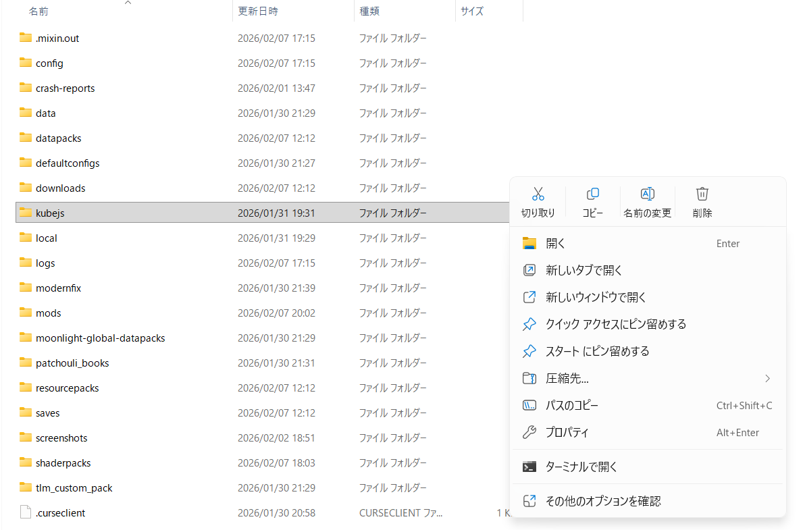

導入方法
Kenma データパックの導入手順です。
必要なファイル
手順
-
modを導入できる環境にするために CurseForge を導入してください。
「curse forge 導入方法」で検索すると解説サイトがたくさんあります。
-
CurseForge から Forge 47.4.10 の Minecraft プロファイルを作成し、
前ページの導入mod解説からmodを導入後、実際にマイクラを起動して仮のワールドを作ります。

-
curseforge/minecraft/Instances/作ったプロファイル名 のフォルダを開き、
中身の kubejs フォルダをこのページでダウンロードしたものに置き換えます。

-
CurseForge から再度プロファイルを起動し、Minecraft を起動すれば完成です。
← トップページに戻る